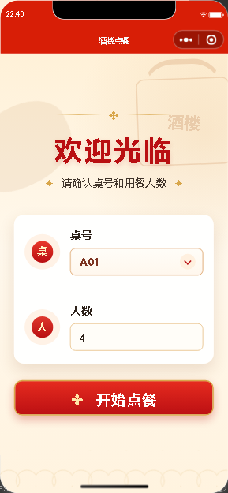
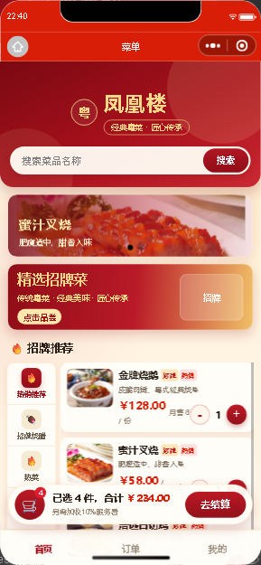
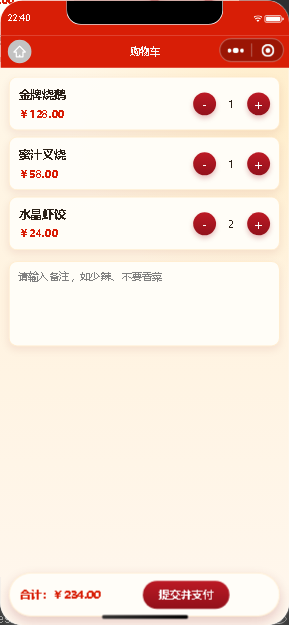
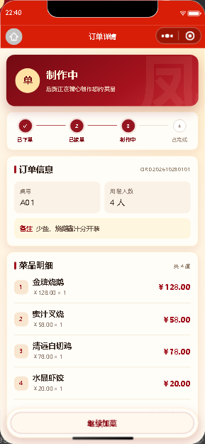
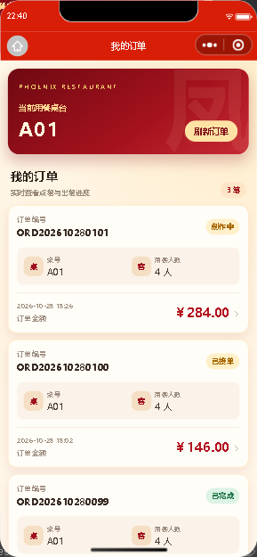
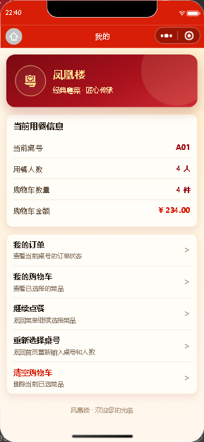

RESTAURANT ORDERING SYSTEM
前端与后台
真实运行页面展示
展示微信小程序顾客端和 Web 商家管理后台的实际运行效果。所有图片都由当前仓库源码运行后截取，没有使用图像生成模型，也没有重新绘制成概念界面。
✓
真实项目运行截图
顾客端：微信开发者工具运行 miniprogram/pages
商家端：浏览器运行 admin-web/*.html
数据：本仓库演示数据与本地接口
截图日期：2026-10-28
WECHAT MINIPROGRAM · ACTUAL CAPTURES
微信小程序前端真实页面
以下图片由官方微信开发者工具运行当前 miniprogram 源码后截取，使用本仓库菜品图片和本地演示接口数据。点击图片可查看原始尺寸。

01选择桌号
pages/index
02分类点餐
pages/menu
03购物车
pages/cart
04订单详情
pages/orderDetail
05我的订单
pages/myorders
06个人中心
pages/profileWEB ADMIN · ACTUAL CAPTURES
Web 商家管理后台真实页面
图片内容来自当前项目 admin-web 源文件的浏览器运行结果，不是设计效果图。点击图片可查看原始尺寸。

01经营统计
admin-web/dashboard.html
02订单管理
admin-web/orders.html
03菜品管理
admin-web/dishes.html
04分类管理
admin-web/categories.html
05商家登录
admin-web/login.htmlIMPLEMENTED FEATURES
当前项目已经实现的功能
桌号与人数
顾客选择有效桌台和用餐人数，切换桌台时自动隔离购物车数据。
分类与搜索
轮播推荐、菜品分类、快捷推荐、名称搜索和菜品数量加减。
购物车与支付
购物车计价、用餐备注、订单创建、模拟微信支付和支付状态反馈。
订单进度
待支付、待接单、已接单、制作中、已完成及订单明细查询。
数据与订单后台
今日经营指标、七日趋势、热销排行、订单提醒和状态流转。
菜品与门店维护
菜品图片上传、上下架、分类排序、桌台编号及启停状态管理。